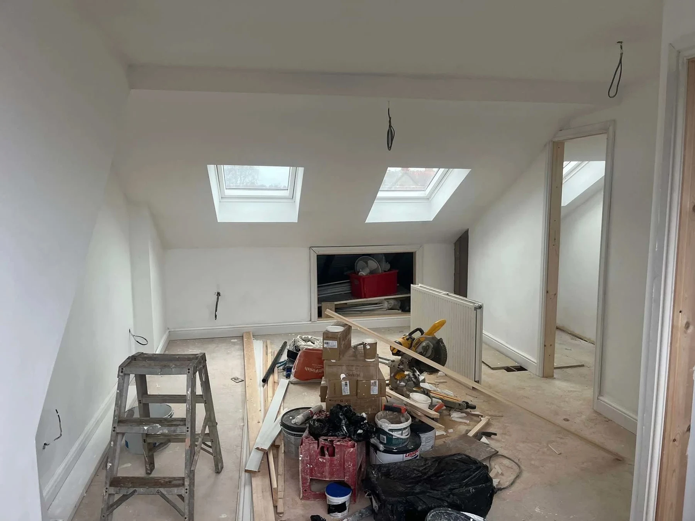

AJB LOFT CONVERSIONS · WORCESTER
Loft conversions.
Room to grow. Without moving.
BUILT AROUND YOUR HOME
Your plans.
Our building expertise.
Turn the space above your home into a room with a purpose. Tell us whether you need a bedroom, work space or room for family life. We can discuss the layout, staircase, roof structure and next steps for your conversion.
Discuss your project →THE AJB PROJECT COLLECTION
Explore the details.
Exteriors, interiors and work in progress from our building projects. Select a photograph to enlarge.
LET’S TALK ABOUT YOUR PLANS
Your next chapter.
Starts at home.
Tell Anthony about your property, your location and the space you want to create. The form opens a WhatsApp draft for you to review, attach plans or photos and send.
Worcester and Upton-upon-Severn. Send your postcode to check coverage.